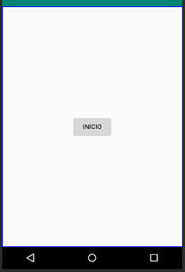
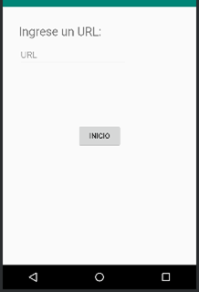
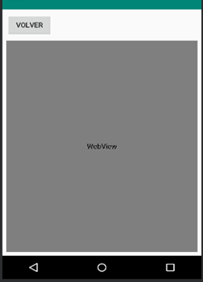

Laboratorio 10
Múltiples ventanas en Android Studio
Objetivo:
Duración:
Ciento veinte (120) minutos.
Materiales y Herramientas:
Procedimiento
Paso 1: Ejecutar un segundo "Activity"
-
Iniciar el software Android Studio y crear un nuevo proyecto llamado Laboratorio10TLM.
-
Diseñar el primer “Activity” el cual tenga un botón de INICIO, como se muestra en la figura.

-
Crear el segundo “Activity”, dar clic derecho en “App” (Sección Project) y seleccionar “New” ->
“Activity” -> “Empty Activity”.
-
Diseñar el segundo “Activity” para que muestre su nombre y un botón para volver al “Activity” inicial.
-
Añadir la función “inicio” en la clase “MainActivity” y asignarla al apartado “onClick” del botón
“INICIO”.
public void inicio(View view) {
Intent i = new Intent(this, Main2Activity.class );
startActivity(i);
}
Al añadir la función, asegurarse que se han importado todas las librerías necesarias.
-
Realizar una función en el segundo “Activity”, llamada “volver”, para regresar al “Activity” inicial,
invocando la función del sistema “finish( )”.
Actividad 1: Presente capturas del dispositivo virtual o real ejecutando la aplicación
en el Paso 1.
Pregunta 1: ¿Qué es un “Activity” y cómo está conformado?
Pregunta 2: ¿Qué es un objeto “Intent” y para qué se lo utiliza?
Paso 2: Enviar parámetros entre “Activities”
en el Paso 1.
-
Modificar el proyecto anterior para que el “Activity” principal tenga la siguiente apariencia

-
Agregue un nuevo “Activity” al proyecto con el siguiente diseño.

-
Editar la función “inicio” de la siguiente manera.
public void inicio(View view) {
EditText et1 = (EditText) findViewById(R.id.editText);
Intent i = new Intent(this, Main3Activity.class );
i.putExtra("direccion", et1.getText().toString());
startActivity(i);
}
-
Crear la función “volver” similar al paso1 y agregar el siguiente código a la función “onCreate” del
tercer “Activity”
Bundle bundle = getIntent().getExtras();
WebView webView1 = (WebView) findViewById(R.id.webView1);
WebSettings conf = webView1.getSettings();
conf.setJavaScriptEnabled(true);
webView1.setWebViewClient(new WebViewClient());
webView1.loadUrl("https://" + bundle.getString("direccion"));
Para acceder a Internet es necesario dar los permisos necesarios a la aplicación, para ello se
debe agregar en el archivo AndroidManifest.xml la siguiente línea antes de la etiqueta
<application>:
<uses-permission android:name="android.permission.INTERNET"/>
Si se desea trabajar con el protocolo http se debe agregar la siguiente línea dentro de la
etiqueta <application>:
android:usesCleartextTraffic="true"
Actividad 2: Presente capturas del dispositivo virtual o real ejecutando la aplicación
en el Paso 2.
Pregunta 3: ¿Cuál es la diferencia entre un objeto “Intent” y un objeto “Bundle”?
RETO: Genere una aplicación que muestre un menú con las siguientes opciones:
-
INICIO
-
REVISAR CORREO
-
ACERCA DE
El “activity” inicio, debe ejecutar un nuevo “activity” en donde se pida un usuario y contraseña y éste a su vez
envíe dichos parámetros a otro “activity” que muestre el mensaje “Bienvenido <user>”.
El “activity” revisar correo, ejecuta un “activity” que muestre la página de gmail.com y se pueda revisar el
correo.
El “activity” Acerca de, ejecuta un “activity” que muestre sus nombres y matrícula.
Todos los “activities” deben tener un botón de retorno al menú principal, únicamente el “activity” Acerca
De, debe tener un botón de salida para cerrar la aplicación